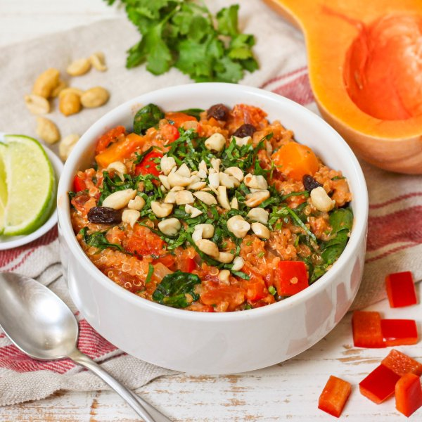

Quinoa-Butternut Squash Stew with Peanuts, Raisins, Spinach & Cilantro

Nutrition (per serving)
591.4 kcalCalories
21.3 gProtein
71.6 gCarbs
29.2 gFat
Full nutrition table
| Calories | 591.4 kcal |
| Total fat | 29.2 g |
| Saturated fat | 4.1 g |
| Trans fat | 0 g |
| Cholesterol | 0 mg |
| Sodium | 71.7 mg |
| Carbohydrates | 71.6 g |
| Fiber | 17.4 g |
| Sugars | 20.4 g |
| Protein | 21.3 g |
| Potassium | 1735 mg |
| Calcium | 230.3 mg |
| Iron | 6.7 mg |
| Vitamin A | 937.2 IU |
| Vitamin C | 103.3 mg |
| Vitamin D | 0 IU |
Cookware
Ingredients
- 1 (5 oz) pkgbaby spinach
- 1 smallbutternut squash
- 1 small bunchcilantro
- 2 (14.5 oz) cansdiced tomatoes
- 2 clovesgarlic
- 1lime
- ¼ cuppeanuts, roasted unsalted
- 1 cupquinoa
- ¼ cupraisins
- 1red bell pepper
- 1 mediumyellow onion
- cayenne pepper
- chili powder
- extra virgin olive oil
- natural peanut butter
- salt
Steps
- Wash and dry the fresh produce. (Skip the spinach if it came pre-washed.)1 small butternut squash
1 red bell pepper
1 (5 oz) pkg baby spinach
1 small bunch cilantro
1 lime - Trim and peel squash; halve lengthwise, scrape out seeds, and small dice. Place in a small bowl.
- Trim, seed, and small dice bell pepper; add to the bowl with the squash and set aside.
- Preheat a large pot over medium heat.
- While the pot heats up, peel, halve, and small dice onion; peel and mince garlic.1 medium yellow onion
2 cloves garlic - Once the pot is hot, add oil and swirl to coat the bottom. Add onion and garlic; cook, stirring occasionally, until softened, about 2 minutes.4 tsp extra virgin olive oil
- Add squash, bell pepper, tomatoes, water, quinoa, and spices to the pot. Stir to combine the stew and bring to a boil over high heat; once boiling, reduce heat to low, cover, and cook until squash and quinoa are tender, about 20 minutes. (Reserve bowl for next step.)2 (14.5 oz) cans diced tomatoes
3 cup water
1 cup quinoa
2 tsp chili powder
1 tsp salt
¼ tsp cayenne pepper - Meanwhile, roughly chop spinach and place in the reserved bowl.
- Shave cilantro leaves off the stems; discard stems and mince the leaves.
- When the quinoa is tender, add spinach to the pot in handfuls, waiting for the spinach to wilt slightly before adding the next handful.
- Add peanut butter, additional water, raisins, and half of the cilantro to the stew. Stir to combine and continue to cook until warmed through, about 3 minutes. (Reserve remaining cilantro for serving.)½ cup natural peanut butter
½ cup water
¼ cup raisins - Meanwhile, roughly chop peanuts. Slice lime into wedges.¼ cup peanuts, roasted unsalted
- Divide stew between bowls; top with reserved cilantro and peanuts. Serve with lime wedges for squeezing over and enjoy!